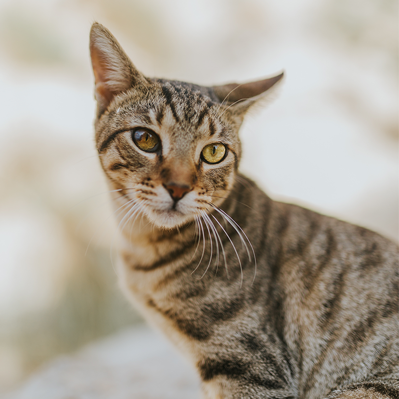

Our Rescue Programs & Services
Explore our adoption, foster care, and community outreach programs.
Interactive Pet Category Finder
Please select a category above to view information.
Adoption Process
Browse available pets, submit an application, and meet your new companion.

Foster Program
Provide temporary care while we supply food and cover all medical expenses.
